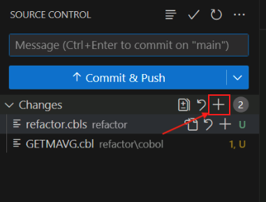
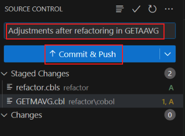
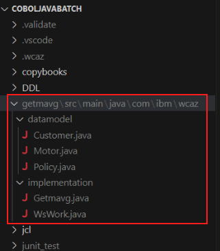

Transform Phase¶
Transform the Refactored Service Code from COBOL to JAVA¶
-
In your zVA instance, open the web browser.

-
Click the
GitLabbookmark from the bookmarks bar.
-
The GitLab page will prompt you for login credentials. Click the
Username or primary emailfield and select thewca4z-gitsaved credentials.
After successfully logging in to GitLab, the GitLab Projects page will open.
-
Open the Project named
wca4z/COBOLJavaBatch.
-
Quickly look through all of the files included in the Project and notice that there are no COBOL components yet.

-
Open another new tab in the web browser and click the
Jenkinsbookmark from the bookmarks bar.
-
The Jenkins login page will appear. Select the saved credentials for
wca4z-jenkinsand log in.
-
After successfully logging in, the Jenkins Dashboard will appear with an option named
ADDIBuildWCA4ZProject. -
Click
ADDIBuildWCA4ZProjectand see that no previous jobs have been run.
-
Minimize the web browser and navigate back to VSCode. In the far left side of the screen, click the
Source Controlicon.
-
Click the
+sign in the Changes section of the VSCode Source Control page to stage the COBOL programs and copybooks.You may need to hover over the Changes line in order for the
+sign to appear.
If done correctly, the changes will move to the Staged Changes section.

-
Add a commit message for the changes. E.g.,
Adjustments after Refactoring in LGACDB01. -
Click the Commit & Push button.

-
A new pop-up will appear prompting you for GitLab credentials. Enter the following and log in.
- Username:
wca4z-git - Password:
P@assw0rd
After doing so, your changes should be committed and pushed to the GitLab repository.
- Username:
-
Navigate back to the Jenkins page in your web browser and refresh the page.
-
You should see a new job that was automatically triggered with your pushed changes. Wait until all stages of the job are completed.

-
Click Job number from the left-side list, and then click
Console Output.This could be
#2or#3, for example.

The log for the job will appear.
-
Look through the job log to see the actions that were performed.

-
Navigate back to the GitLab tab in your browser and refresh it.

You should see a few changes. - a new commit with a green check mark, and - a new
refactorfolder that was not present before -
Open the
refactorfolder in the GitLab browser page, then open thecobolsub-folder.The
LGACDB01code will now be present. -
Navigate back to VSCode
-
Right click the
LGACDB01.cblfile, hover overwatsonx Code Assistant for Z, and selectSelect COBOL for transformation.Note: the same task can be performed by selecting the
Import COBOLbutton in the bottom-left corner of VSCode under theIBM WATSONX CODE ASSISTANT FOR Zsection.Either way, the
LGACDB01.cblfile should now be present in theIBM WATSONX CODE ASSISTANT FOR Zsection in the bottom-left of VSCode. -
Click the icon next to
LGACDB01.cbltoGenerate Java classes.
A new input bar will appear in the top-middle of VSCode, prompting you for a Java directory,
-
Select
Input absolute path, and add the following to the end of the default path:\src\main\java.The absolute path should be the following:
c:\Users\Administrator\Desktop\WCA4Z Lab Data\COBOLJavaBatch\src\main\java
-
Press enter.
A new tab for
Java Class designshould open.
-
Optionally expand the different artifacts using the down arrows. Keep all of the default values.
-
At the bottom-right of
Java Class designtab, click Generate Java classes.
-
In the left-side menu of VSCode, navigate to the
src\main\com\ibm\wcazfolder to see the list of generated Java classes.
-
From this folder, open the file named
Lgacdb01.java.
A new section named
JAVA PROJECTSwill appear at the bottom-left of VSCode the Java projects will be generated.
You may need to expand the
JAVA PROJECTSsection to see the projects.The Java classes and method names can be found in the
refactor\cobolfolder in theIBM WATSONX CODE ASSISTANT FOR Zsection.
You may need to expand the
IBM WATSONX CODE ASSISTANT FOR Zsection to see the classes and methods. -
In the
refactor\cobolfolder, open the method namedinsertCustomer.
-
In the
refactor\cobolfolder, click the icon next to theinsertCustomerfilename to generate the Java method.
-
After the Java method gets generated in the right-side panel, click the
Insertbutton.The generated java method for
insertCustomerwill be inserted in the Java class.
-
Repeat this process for the
writeErrorMessagefunction.


In this Transform phase,
- We used the workbook
LGACDB01from Refactor phase forINSERT-CUSTOMERfunctionality. - We generated Java classes and Java methods for the
INSERT-CUSTOMERservice.